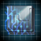

Console:Crisis

A crisis is an event that threatens the entire galaxy and all life within it. There are two types of crises: those caused by outside entities that make an appearance after the game reaches either the mid or endgame phase, and those caused by player and AI empires becoming the crisis themselves (except Fallen Empires).
Mechanics
Crises arrive into the galaxy at certain points of the game and tend to attack all empires indiscriminately in a manner similar to a Total War; systems conquered by a crisis faction will either be immediately absorbed into their territory or will have their starbases completely destroyed, depending on the crisis. Each time a crisis conquers a planet, it causes a Threat opinion bonus between with all empires, making them more likely to cooperate against the crisis. Fallen Empires will send their fleets against a Crisis if it approaches their borders and may even awaken to help fight it.
In general, crisis factions are removed from diplomacy and cannot be negotiated with like common empires. Certain types of governments or traditions are able to communicate with some crisis factions and gain extra bits of loreful conversation. The arrival of a crisis faction will cause a Galactic Focus resolution to fight them to become available in the galactic community.
The Crisis Strength galaxy setting and the various difficulty bonuses increase the hull, shield, armor, and damage of crisis factions, but not the ship fire rate. These bonuses affect both midgame and endgame crises, with the former getting a fraction of the bonus. Having a crisis active in the galaxy will stop the game from ending, even if the Victory Year has been reached.
Midgame crises
Midgame crises occur during the midgame phase of the game and, while having a smaller impact than endgame events, are capable of notably reshaping the current state of the galaxy. Rather than following the same mechanics of the endgame crises noted below, midgame crises tend to be locked to specific DLC mechanics. The list of midgame crises are:
Endgame crises
Endgame crises can only happen if they haven't been disabled in the galaxy settings. Normally only one crisis can happen per game, but if the Crisis Type setting was set to All, then all of them will eventually happen and each one will be twice more powerful than the previous one.
The base start year for the endgame crisis is 25 years after the start of the endgame. This is reduced as follows:
| Start year | Requirements |
|---|---|
| Prior to the endgame start year | Either:
|
| Endgame start year | Either:
|
| 25 years after endgame start year | No conditions |
In addition, an endgame crisis cannot be triggered if another crisis is active. This means either a minimum of twelve years since a crisis was triggered (regardless of type), or if a crisis currently exists on the galactic map.
An endgame crisis is triggered by a dice roll performed once every five years, and the chances generally increase the more time has passed in the endgame. The Prethoryn, Contingency and Synthetic Queen generally have the same weights in the code. The following is a non-exhaustive list of examples of the chances that may be calculated based on the state of the galaxy, assuming the Machine Age DLC is active:
| Condition | Chances for each crisis (rolled once every five years) |
|---|---|
No special conditions:
|
|
Some early triggers:
|
|
Exceptionally early start:
|
|
Chances for an endgame crisis increases at certain intervals: the weight doubles at after 35 years and 50 years after the endgame start date, triples after 70 and 85 years, and quadruples after 100 years (all of which stack). A crisis has zero chance to occur if it has already occured, and its weight is tripled if it was specifically selected in the galaxy settings (with the others having their chances set to zero). The Unbidden has its weight halved if less than 20 years have passed since the endgame start date.
Endgame crises have a Situation Log entry that keeps count of the casualties on both sides and shows how close the crisis is to being defeated. During an endgame crisis, an audio cue will play in the background and grow more pronounced the more systems are controlled by the crisis.
Once an endgame crisis arrives, the following things will happen:
- If the Galactic Community or Galactic Imperium exists, a Galactic Focus resolution to fight the crisis will become available.
- If the
 Enigmatic Observers or
Enigmatic Observers or  Keepers of Knowledge fallen empires are present, they can awaken as Guardians of the Galaxy, and may also do so if they had already awakened beforehand. The
Keepers of Knowledge fallen empires are present, they can awaken as Guardians of the Galaxy, and may also do so if they had already awakened beforehand. The  Ancient Caretakers will also awaken, but only if the crisis is the Contingency.
Ancient Caretakers will also awaken, but only if the crisis is the Contingency. - The Shroud-Touched Coven will disappear if present.
- Empires with the
 Fear of the Dark origin will receive a bonus to ship build speed and cost.
Fear of the Dark origin will receive a bonus to ship build speed and cost.
If an endgame crisis is defeated, every empire will receive +10%  Happiness for 10 years and a large reward of
Happiness for 10 years and a large reward of  Unity.
Unity.
Endgame crises each possess their own mechanics and ship components, meaning the best means to combat one may not be as effective on another; strategies for combating each individual crisis faction can be found on their respective sub-sections. However, there are a number of damage modifiers which apply to all crisis factions, making them useful in all cases:
| Damage to endgame crisis factions | |
|---|---|
| Source | Effect |
| +50% | |
| +25% | |
| +25% | |
| +25% | |
| +20% | |
| +20% | |
| +20% | |
| +20% | |
Prethoryn Scourge

The Prethoryn Scourge is a swarm of hive-minded alien locusts from beyond the galaxy, arriving for the purpose of devouring all life. The crisis begins with a notice about subspace echoes beyond the galaxy that are approaching. Immediately a Situation Log notice called "The Coming Storm" is added.
In roughly 50 years, they will be close enough to get the general direction of the swarm. A system at the edge of the galaxy will be marked as the center of the Invasion. The system cannot be within or near a Fallen or Awakened Empire. The closest 5 systems are marked for the vanguard fleets. 10 years later, a transmission will be received from the swarm.
30 months later, the Vanguard will arrive with 12 fleets and 5 construction ships. At this point the Prethoryn Scourge appears in the contact log but cannot be communicated with. If an empire's primary species has the  Hive-Minded or
Hive-Minded or  Psionic traits, it will be able to communicate with the crisis but diplomacy remains impossible.
Psionic traits, it will be able to communicate with the crisis but diplomacy remains impossible.
200–600 days after the vanguard, the main invasion fleet will arrive at the center system. In each vanguard system, 3 Star Brood, 3 Transport Fleets and one construction ship will spawn.
The Prethoryn Scourge uses the following mechanics:
- The Prethoryn species itself is immortal so their Commanders will never die of old age.
- Every year, the Prethoryn Scourge gains the following ships:
- If they have fewer than 4 Infestors, they get 5 Infestors
- If they have fewer than 4 Constructors, they get 3 Constructors
- If they have fewer than 140 armies, they get 20 armies
- (every 2 years) If they have fewer than 2000 ships and at least 1
 Infested World, they get 2 Star Brood fleets. The number is increased to 3 if they control at least 20% of the galaxy and to 4 if they control at least 40% of the galaxy.
Infested World, they get 2 Star Brood fleets. The number is increased to 3 if they control at least 20% of the galaxy and to 4 if they control at least 40% of the galaxy.
- The Prethoryn Scourge will attack planets that contain biological pops first.
- Each fleet will take systems in a way similar to Total Wars.
- The Prethoryn Scourge use Infestors as colony ships. They will land on uncolonized habitable planets and when the colony development process is complete, the planet is turned into an Infested World. As with regular colony development, any orbital bombardment will instantly interrupt the process.
- Prethoryn transports will invade inhabited worlds. If they occupy the world, they will begin to purge the pops. If the world is not reclaimed before all pops are killed, it will turn into an Infested World.
- Infested Planets cannot be invaded. In order to get rid of the infestation, infested planets must be bombarded until
 Devastation reaches 100%, at which point they will turn into a
Devastation reaches 100%, at which point they will turn into a  Barren World with the
Barren World with the 
 Terraforming Candidate modifier.
Terraforming Candidate modifier. - If the Scourge overruns a habitable megastructure, it will destroy it and it cannot be rebuilt.
Audio Cue: As the Prethoryn Scourge infests more of the galaxy, soft chewing sounds will start to be heard in the background.
Prethoryn fleets
Vanguard fleets consist of 31 Swarmlings led by a commander with the  Void Hunter trait. Star Brood fleets consist of 1 Queen, 8 Brood Mothers, 10 Warriors, and 35 Swarmlings led by a commander that has a 25% chance to have the
Void Hunter trait. Star Brood fleets consist of 1 Queen, 8 Brood Mothers, 10 Warriors, and 35 Swarmlings led by a commander that has a 25% chance to have the  Hive Affinity trait.
Hive Affinity trait.
Prethoryn Ships have natural armor despite not using armor components. The stats of their weapons are determined by the Crisis Strength setting. Scourge Missiles and Swarm Strikers can be reverse-engineered. Their bio-drives and thrusters are identical to tier 1 drives and thrusters while their bio sensors are identical to tier 2 sensors.
| Swarmling | Warrior | Brood Mother | Queen | Starbase |
|---|---|---|---|---|
|
|
|
|
|

Sentinel Order
If the Prethoryn Scourge controls either 15% of the galaxy or 90 systems, the Sentinel Order will spawn. If a Fallen or Awakened Empire is present, it will spawn next to its borders, otherwise it will spawn next to the borders of a random empire. A new black hole system will be spawned for them and they have Fallen Empire level tech, although their fleets will lack strength from repeatable technologies. Every few years, the Sentinels will create a fleet as long as they have below 200 ships. Sentinel fleets use the ship appearance of all species archetypes except DLC ones and use top-tier components. Their initial fleet also includes a Fallen Empire titan. Sentinel commanders have the 

 Sentinel Training trait.
Sentinel Training trait.
If the Prethoryn Scourge controls at least 50% of the galaxy, the Sentinels will make a breakthrough in swarm anatomy, giving every empire the Sentinel Data permanent empire modifier.
Every few years, as long as the Sentinels have more than 30 ships, they will offer a one time donation of ships to an empire that destroyed at least 7 Prethoryn fleets and did not attack the Sentinels. Those fleets do not use  Naval Capacity and cannot be upgraded. Each fleets consist of the following:
Naval Capacity and cannot be upgraded. Each fleets consist of the following:
| 1 battlecruiser | 1 battleship | 1 cruiser | 4 escorts | 4 destroyers | 8 corvettes | |
|---|---|---|---|---|---|---|
| Weapons |
|
|
|
|
|
|
| Utility |
|
|
|
|
|
|
| Core |
|
|
|
|
|
|
The sentinels do not expand. A few weeks after the Prethoryn Scourge has been defeated they will disband.
Captured Queens
There are two queens who can be captured. The first is the  Prethoryn Brood-Queen Relic, which has a 1% chance to be obtained after winning a random space battle against a Star Brood fleet and can only be obtained by one empire.
Prethoryn Brood-Queen Relic, which has a 1% chance to be obtained after winning a random space battle against a Star Brood fleet and can only be obtained by one empire.
The second is an incapacitated queen that can appear in a random system inside Prethoryn space, if the Prethoryn Scourge is not defeated within a number of decades. A special project will become available there to every empire to tame the queen, and the first empire that completes it will gain the domesticated queen as a fleet led by an unchangeable level 8 Fleet Consciousness Commander. Roughly every two months, the queen has a 33% chance to add a Warrior to the fleet and a 66% chance to add a Swarmling to the fleet, until the fleet has 30 ships. In addition, roughly 100 years later, if the queen is still alive and the main species is  Psionic, the queen will reveal that the galaxy the Prethoryn species came from has been extinguished or eclipsed by something and the empire will gain 1000-5000 monthly
Psionic, the queen will reveal that the galaxy the Prethoryn species came from has been extinguished or eclipsed by something and the empire will gain 1000-5000 monthly  Physics research.
Physics research.
Feral Prethoryn
For 15 years after the Prethoryn Scourge has been defeated, every year there is a 10% chance that, on a system with a previously infested planet, a Feral Prethoryn starbase and 3 Feral Prethoryn fleets will appear. They will not expand but may roam the surrounding systems and fight other Feral Prethoryn swarms. Roaming fleets are made up of 56 Swarmlings.
Successfully repelling the Prethoryn Swarm
Prethoryn Swarm entities are heavily armored, attack enemies with missiles and strike craft, along with some acid bursts. Swarmlings possess Corvette-level evasion.
Since all their weapons either ignore or cause major damage to shields, and work equally well against armor and hull, combat fleets should protect themselves with point defense, strikecraft, and armor. Use energy weapons that deal bonus damage against both armor and hull to attack. Arc Emitters work well too; if you build Arc Emitter battleships, hangars will naturally be a good support weapon for them.
Empires which lack the means to directly counter the Scourge’s fleets should immediately focus on containing its expansion instead. Keeping multiple small fleets of corvettes or destroyers to hunt down their civilian ships and stopping infestations is a viable strategy to limit the spread of the Scourge, as they will send otherwise engage fleets to try and stop your efforts. Do note that smaller ships will be highly vulnerable to Swarm Strikers if caught in a direct fight.
If an important planet falls to a Prethoryn invasion, it will take much longer for them to infest it compared to uninhabited planets, as purging takes much longer than infestation. Infested planets are immediately turned into barren planets once they take enough planet damage. Since the Swarm only can infest habitable worlds, it is possible to starve them by cornering them and launching surgical strikes toward their planets to render them uninhabitable, thus widening the gap between them and any infestable territory. The Prethoryn will pull any fleets from surrounding systems to defend their planets, so fleets targeting Prethoryn planets must be prepared to face multiple swarm fleets if those have not been dealt with already. AI Empires in particular will use such hit-and-run tactics against infested planets.
Another feasible strategy is to get a Colossus into the area where the Crisis will spawn and breaking all of the planets to starve them. Putting your best fleets near the edge of the invasion zone is also helpful, stationing them at the ending for any wormholes leading out of the invasion zone is a must.
Prethoryn "Star Brood" fleets are composed of at least one Queen, escorted by Warrior and Brood Mother battleship equivalents, with Spawnling corvettes making up the bulk of the fleet combat strength. A fleet equipped with long-range weapons can expect to destroy a number of Spawnlings before the Prethoryn units are able to return fire, at which point emergency FTL can be used to avoid casualties altogether. By repairing and repeating, this guerrilla tactic can wear down Prethoryn fleets until they are small enough to defeat in a full confrontation.
Salvage should not be forgotten as it unlocks their missiles. Their starbases are equally good sources of technology while being much easier targets.
Extradimensional Invaders

The Extradimensional Invaders are energy beings from another dimension who invade the galaxy with the intent of devouring the lifeforce of every species in it. The crisis begins with a note about a massive power surge somewhere in the galaxy.
Immediately, in a non-pulsar system outside the borders of a Fallen Empire, a Dimensional Portal, a portal starbase and the main Unbidden fleet will emerge. If the system lies within the borders of an empire, the starbase is instantly destroyed. 15 days later, a second fleet will emerge. Another 15 days later, a third fleet will emerge, contact with the Unbidden will open and the location of the Dimensional Portal will be added to the Situation Log. Fleets will destroy starbases in systems, turning them into unclaimed territory, while constructors will build starbases in unclaimed systems.
Extradimensional Invaders will focus their attacks on a single empire. If an empire’s ruler has the 

 Chosen One trait, that will be the target. Otherwise, empires with a
Chosen One trait, that will be the target. Otherwise, empires with a  Psionic main species will be targeted first.
Psionic main species will be targeted first.
If an Extradimensional fleet reaches an undefended planet, it will drain life from orbit. When  Devastation reaches 100%, the planet is turned into a
Devastation reaches 100%, the planet is turned into a  Barren World with the
Barren World with the 
 Terraforming Candidate modifier. Habitable megastructures will be destroyed and cannot be rebuilt. Extradimensional fleets ignore FTL Inhibitors.
Terraforming Candidate modifier. Habitable megastructures will be destroyed and cannot be rebuilt. Extradimensional fleets ignore FTL Inhibitors.
The Dimensional Portal cannot be destroyed until all Dimensional Anchors are destroyed. These are located in systems highlighted in the Galaxy Map, improve shields hardening for Extradimensional fleets in the system by 50% and have perfect cloaking detection. The portal will remain guarded by the main Extradimensional fleet. If the portal system is attacked, then the invaders will recall all of their ships to aid in its defense. If the starbase in the portal system is destroyed, all fleets will remain to guard the system until it is rebuilt, halting their expansion. The empire that destroys the last Dimensional Portal will gain the  Extradimensional Warlock Relic as well as a temporary
Extradimensional Warlock Relic as well as a temporary  Opinion bonus from everyone.
Opinion bonus from everyone.
The Extradimensional Invaders get additional fleets 55, 90, 180, 265, 340, 425 and 550 days after the portal spawns. Afterwards, unless they have more than 2000 ships, they will receive smaller reinforcement fleets through the portal at regular intervals, with the interval being lower if they have more starbases:
- 0 Starbases: 1500 days, ±200
- 1 Starbases: 1300 days, ±200
- 2 Starbases: 1100 days, 200
- 3 Starbases: 900 days, ±200
- 4 Starbases: 600 days, ±200
- 5 Starbases: 400 days, ±200
- 6 Starbases: 400 days, ±200
- 7 Starbases: 300 days, ±100
- 8 Starbases: 250 days, ±50
- 9 Starbases: 200 days, ±50
- 10+ Starbases: 150 days, ±50
It should be noted that unlike the other crises, which provide warning several years in advance, the Extradimensional Invaders will arrive instantly and with no indication of where the portal will open.
Audio Cue: As the Extradimensional Invaders consume more of the galaxy, a faint wind will be heard in the background.
The Aberrant and the Vehement


When the Unbidden borders cover either 15% of the galaxy or 90 systems, a second extradimensional portal will open, bringing up another faction called the Aberrant. A few years later, a third portal bringing a third faction called the Vehement will open. While all three factions will be hostile towards everything, they are also hostile towards each other.
The new factions have a far shorter delay for the Initial Fleet spawns (1, 5, 15, 30, 45, 60, 150, 350) in order to bring them on even ground with the Unbidden.
Extradimensional fleets
Unbidden, Aberrant and Vehement ships use different names but are identical save for color. All components can be reverse-engineered, including their unique weapons.
Initial fleets consist of 8 battleships, 12 cruisers and 20 escorts led by a commander that has a 50% chance to have the  Dimensional Stutter or
Dimensional Stutter or  Ethereal trait.
Ethereal trait.
Reinforcement fleets consist of 5 battleships, 8 cruisers and 15 escorts led by a commander that has a 50% chance to have the  Dimensional Stutter or
Dimensional Stutter or  Ethereal trait.
Ethereal trait.
Portal fleets consist of 20 battleships, 30 cruisers and 45 escorts led by a commander with the  Ethereal trait.
Ethereal trait.
| Destroyer | Cruiser | Battleship | Starbase | Portal Starbase |
|---|---|---|---|---|
|
|
|
|
|
Successfully repelling the Extradimensional Invaders
Extradimensional ship health is about one third hull, two thirds shield with no armor, so using fleets with only kinetic weapons is very effective. Explosive weapons can also be very effective as the Invaders have lackluster point defense and no shield hardening except in systems with a Dimensional Anchor (which provides +50% hardening.) In terms of fleet composition, focus on Battleships with Giga Cannons and Kinetic Batteries, combined with Titans using the shield dampening aura. Alternative fleet compositions are Whirlwind Missile cruisers, Focused Arc Emitter battleships, or carriers (either cruisers or battleships). In terms of defense, the Invaders solely use energy weapons, so a focus on shield modules is ideal. Their weapons also have poor range, so increasing sublight speed can allow artillery ships to kite them from a safe distance.
Since Extradimensional Invader ships do not use any armor, luring fleets to fight in systems with Pulsar stars can be advantageous as it nullifies their shields while the player’s fleet can use armor. Cosmic Storms also disable all shields, providing a similar advantage to an armor using fleet and the Zroni Storm Caster can be used to create a storm in a system. Because these systems will also disable the player's shields however, and because Extradimensional Invader weapons still deal bonus damage to armor, the best case scenario is to fight the Unbidden after they have just left any system which nullifies shields. This allows the player to use shielded ships while the Invaders are still recharging their shields.
The player has multiple strategic choices when faced with these Extradimensional Invaders:
- A quick rush after the portal opening might be possible. However, one must be able to quickly dispatch the portal guards and initial fleets as they spawn, which requires very powerful fleets.
- Unlike other crises, their initial invasion fleets are much stronger than reinforcements. If the player can effectively clear their initial fleets, reinforcements shouldn't be a problem since they're much weaker than initial ones.
- Salvage should not be forgotten as it unlocks their unique weapons. The starbases are equally good sources of technology as the fleets while being much easier targets. However, the Matter Disintegrator weapons are anti-armor and hull, and the Extradimensionals use no armor on their ships, so replacing your weaponry with these is a bad idea to fight the invaders.
- If the Extradimensional Invaders have claimed many systems before normal empires can strike back, the player should focus on destroying their starbases and construction ships, since starbases will reduce reinforcement interval.
The arrival of the other Extradimensionals are a mixed blessing. On one hand, they might appear in the rear of a large empire or alliance, threatening important worlds and thus the defense against the existing Factions. On the other, all Extradimensional factions will begin to fight each other, potentially causing major damage to one another. Once engaged in combat there, the enemy fleets will have difficulty defending any of their starbases and even the portal itself, making this a crucial opening to strike at such critical targets.
|
|
Available only with the Astral Planes DLC enabled. |
If the Formless were not destroyed at the end of their situation, they can be contacted while the Unbidden are present, offering some lore and advice on defeating them. The latter option costs  2000 Astral Threads and grants the "Secrets of the Unbidden" modifier, granting +10% damage against them. If the Aberrant and Vehement spawn, the Formless provide an identical damage buff for each of them as well, but the cost must be paid separately for each faction.
2000 Astral Threads and grants the "Secrets of the Unbidden" modifier, granting +10% damage against them. If the Aberrant and Vehement spawn, the Formless provide an identical damage buff for each of them as well, but the cost must be paid separately for each faction.
Contingency
The Contingency is an ancient, frenzied artificial intelligence whose purpose is to sterilize all life in the galaxy once it reaches a certain level of technological advancement, wiping out all organics and also all synthetics who fail to fall under its control. The crisis begins with a signal dubbed the Ghost Signal bouncing across the galaxy. Every year, each empire will be affected by an event, in the following order:
- Every biological empire that has the
 Artificial Administration and
Artificial Administration and  Mechanical pops and every machine empire will lose a robot pop.
Mechanical pops and every machine empire will lose a robot pop. - Every biological empire that has the Artificial Administration and Mechanical pops will lose a robot pop.
- Every empire will get a notification about galaxy-wide synthetic disappearances.
- Every empire will get a notification about the Ghost Signal growing stronger.
A year after the final event, the Contingency will activate. Every 50 days, one of 4 random uninhabitable planets will transform into a Sterilization Hub  AI World and spawn a defense station, 3 attack fleets, and 3 construction ships and an army fleet. The planets are determined at galaxy generation, so reloading a save will not alter the result. The hubs cannot be invaded and must instead be bombed until they reach 50%
AI World and spawn a defense station, 3 attack fleets, and 3 construction ships and an army fleet. The planets are determined at galaxy generation, so reloading a save will not alter the result. The hubs cannot be invaded and must instead be bombed until they reach 50%  Devastation, at which point they turn into broken planets with a deposit of
Devastation, at which point they turn into broken planets with a deposit of  Energy,
Energy,  Minerals and
Minerals and  Living Metal and may unlock the technology to harvest it. Colossus owners can also use a World Cracker, Global Pacifier or Divine Enforcer on sterilization hubs, though the worlds will not gain a Living Metal deposit unless this is done with a Divine Enforcer. The Contingency will initially try to occupy the systems between the various AI Worlds in order to become a continuous empire.
Living Metal and may unlock the technology to harvest it. Colossus owners can also use a World Cracker, Global Pacifier or Divine Enforcer on sterilization hubs, though the worlds will not gain a Living Metal deposit unless this is done with a Divine Enforcer. The Contingency will initially try to occupy the systems between the various AI Worlds in order to become a continuous empire.
When a planet is captured by the Contingency, it immediately starts the process by purging all pops. If the planet is recaptured, the purges will stop and the planet returns to the original owner. If the purge is completed, the planet changes control over to the Contingency. 3  Mechanical pops called Custodian Bots are spawned but the planets will not reinforce the Contingency. Unlike Sterilization Hubs, purged planets can be captured in ground combat. Unlike other crises, the Contingency does not ruin ring world segments or habitats.
Mechanical pops called Custodian Bots are spawned but the planets will not reinforce the Contingency. Unlike Sterilization Hubs, purged planets can be captured in ground combat. Unlike other crises, the Contingency does not ruin ring world segments or habitats.
After all Sterilization Hubs are destroyed, a new system will appear at the ends of the galaxy. The system contains a 5th and final AI world, Nexus Zero-One, guarded by 1 Final Core and 4 AI Core Stations. When Nexus Zero-One is destroyed, the Contingency deactivates, all its ships self-destruct, infiltration events and special projects end and the Ghost Signal is removed. The empire that destroys Nexus Zero-One will gain the  Isolated Contingency Core Relic. The planet does not create any deposit when destroyed.
Isolated Contingency Core Relic. The planet does not create any deposit when destroyed.
Contingency fleets ignore FTL Inhibitors.
Audio Cue: As the Contingency sterilizes more of the galaxy a mainframe will start to be heard in the background.
The Ghost Signal
After the Contingency activates, the Ghost Signal will start to affect every synthetic pop and even ships with the  Sapient Combat Computer. It is measured in 5 levels and starts at 5. The Ghost Signal will lose strength each time a Sterilization Hub is destroyed, lessening its effects.
Sapient Combat Computer. It is measured in 5 levels and starts at 5. The Ghost Signal will lose strength each time a Sterilization Hub is destroyed, lessening its effects.
 Machine empires are affected less, but given that most if not all their pops are robots, the effect is greater on them. They will get a special project to remove its effects that costs 2000+70*Pop
Machine empires are affected less, but given that most if not all their pops are robots, the effect is greater on them. They will get a special project to remove its effects that costs 2000+70*Pop  Engineering. If the
Engineering. If the  Quasi-Dimensional Reflection technology has been researched, the cost is reduced to 2000+50*Pop
Quasi-Dimensional Reflection technology has been researched, the cost is reduced to 2000+50*Pop  Engineering.
Engineering.
 Autonomous Ship Intellects used by
Autonomous Ship Intellects used by  Gestalt Consciousness empires are immune to the Ghost Signal.
Gestalt Consciousness empires are immune to the Ghost Signal.
Synthetically Ascended species are also immune to the Ghost Signal, however any  mechanical pops built by these empires that aren't considered part of their main species of synths will be affected.
mechanical pops built by these empires that aren't considered part of their main species of synths will be affected.
| 5 |
|
|
|
one fleet every 1600 days +/- 200 | one army every 700 days +/- 200 |
| 4 |
|
|
|
one fleet every 1500 days +/- 200 | one army every 1000 days +/- 200 |
| 3 |
|
|
no effect | one fleet every 1400 days +/- 200 | one army every 1300 days +/- 200 |
| 2 |
|
|
no effect | one fleet every 1300 days +/- 200 | one army every 1600 days +/- 200 |
| 1 |
|
|
no effect | no reinforcements | no reinforcements |
Contingency espionage
Unlike other crises, the Contingency also uses espionage. The first infiltration attempt will invariably fail. The second infiltration will happen 120 days afterwards and will make every empire targetable for infiltration events. Every year each empire has a 30% chance to get an infiltration event. Paragon leaders cannot be targeted by these events.
Biological empires can get the following events:
- 10% chance a
 Commander is killed.
Commander is killed. - 10% chance a
 scientist is killed.
scientist is killed. - 10% chance a random starbase is destroyed.
- 10% chance random planet gets −20
 Stability for 20 years.
Stability for 20 years. - 10% chance there is an assassination attempt of the ruler. There is a 70% chance the ruler escapes and gains 80-175
 Influence and a 30% chance the ruler is killed.
Influence and a 30% chance the ruler is killed. - (repeatable) 40% chance a random planet gets +20% Devastation and 3 pops are killed. The empire will then get −10%
 Unity for 6 years.
Unity for 6 years.
 Machine empires can get the following events, all with equal chances:
Machine empires can get the following events, all with equal chances:
- A Commander is killed.
- A scientist is killed.
- A random starbase is destroyed.
- A world with 3
 Generator Districts gains −20% Energy from jobs for 5 years.
Generator Districts gains −20% Energy from jobs for 5 years. - (repeatable) Errors are detected in some pops, which may be caused by the Ghost Signal. You are given the option to either terminate the units (no pop is actually killed) or wait. If you choose the latter after 120 it will turn out to be either:
- 65% chance nothing happens
- 35% chance a world gets +10% Devastation and loses 4 pops.
There are ways to stop Contingency espionage:
- Biological empires will receive the Synth Detection special project within a few years. The special project 2000+100*Pop
 Engineering. If the
Engineering. If the  Quasi-Dimensional Reflection technology has been researched the cost is reduced to 2000+75*Pop Engineering.
Quasi-Dimensional Reflection technology has been researched the cost is reduced to 2000+75*Pop Engineering.  Machine empires can stop infiltration by completing the Blocking the Ghost Signal special project or once the Ghost Signal strength falls below 4.
Machine empires can stop infiltration by completing the Blocking the Ghost Signal special project or once the Ghost Signal strength falls below 4. Hive Mind and
Hive Mind and  Psionic empires cannot be infiltrated and already infiltrated empires will become immune if their main species gains the Psionic trait.
Psionic empires cannot be infiltrated and already infiltrated empires will become immune if their main species gains the Psionic trait.
Contingency fleets
Roaming fleets consist of 10 euthanizers and 20 sterilizers led by a commander with random skill.
Hub fleets consist of 25 euthanizers and 50 sterilizers led by a commander with random skill.
Contingency starbases have a  Detection Strength of 8, making them extremely difficult to ambush.
Detection Strength of 8, making them extremely difficult to ambush.
| Sterilizer | Euthanizer | AI Core | Master Core | Starbase |
|---|---|---|---|---|
|
|
|
|
|
The Contingency uses Android Assault Armies to invade worlds. Each transport fleet consist of 20 Android Assault Armies and do not have a commander.
The Cybrex
Originally one of the precursor empires, the Cybrex will resurface to help fight the Contingency if it sterilizes either 15% of the Galaxy or 90 systems. At the edge of the galaxy, the Cybrex Beta ringworld system will spawn. All empires will be contacted immediately. The Cybrex will construct a new fleet every few years as long as they have below 300 ships.
Every few years, as long as the Cybrex have more than 30 ships, they will offer a one time donation of ships to an empire that destroyed at least 100 Contingency ships and did not attack them. Those fleets do not use  Naval Capacity and cannot be upgraded. A month after the crisis ends they will take the ships back.
Naval Capacity and cannot be upgraded. A month after the crisis ends they will take the ships back.
Cybrex ships are identical to the Contingency’s save for the color. Each fleet is led by a commander with the  Cybrex Databases trait.
Cybrex Databases trait.
The Cybrex do not expand. A few weeks after the Contingency is defeated, they will depart from the galaxy, leaving Cybrex Beta free for the taking.
Ancient Caretakers
A few days after the first sterilization hub is revealed, if the Ancient Caretakers are present in the galaxy, they will awaken and the Contingency will attempt to corrupt their civic. The Ancient Caretakers have a 66% chance of gaining the  Final Defense Directives civic (Guardians of the Galaxy awakening) and a 33% chance of gaining the
Final Defense Directives civic (Guardians of the Galaxy awakening) and a 33% chance of gaining the  Corrupted Defense Directives civic and start attacking every other empire regardless of relative power. The chance is rolled at the start of the game so reloading a previous save will not alter the result.
Corrupted Defense Directives civic and start attacking every other empire regardless of relative power. The chance is rolled at the start of the game so reloading a previous save will not alter the result.
5 years later, other Fallen Empires may awaken as a Guardians of the Galaxy as usual, allowing up to 3 Guardian empires against the Crisis.
Once the Contingency is defeated, if the Ancient Caretakers awakened as Guardians, they will shut down, leaving their ringworlds free for the taking.
Successfully repelling the Contingency
The initial Fleet spawned with the Hub systems is considerable and planets in the Hub systems will often have fallen before the first fleet has mobilised. Colonies in the Hub systems are generally a writeoff until the roaming fleets have been dealt with.
Even if identified beforehand, Hubs normally cannot be prevented from awakening. If the planet is destroyed through the World Cracker Colossus, the shattered world will simply reform into the Sterilization Hub. Military starbases on the star will be abandoned if there are no colonies there, rendering any resources spent moot. If fleets are parked in the system, the Contingency will spawn an armada of much greater power than standard.
The first order is generally to destroy any roaming fleets, with priority for the ones closest to the player. While the four Hubs will open separate fronts, the great distance means their respective fleets will be unable to easily link up. This allows the player to more easily pick off fleets and focus on one Hub at a time. Contingency fleets already spawned are generally unlikely to rush to the aid of a planet or Hub. They are more likely to attack another target than defend, but may refuse to leave the Hub station if nearby fleets are too strong.
Destroying all four Hubs is the ultimate goal. Their Hub fleets will always stay with the Hub, making it a hard target together with the AI Core and the starbase. While destroying one of the Hubs does reduce the reinforcement intervals, the reduction in spawn cycles running in parallel should be a net advantage.
The Synthetic Queen
|
|
Available only with the The Machine Age DLC enabled. |
The Synthetic Queen is an extremely powerful synth whose goal is to bring an end to all suffering by ending sapience itself. She is the only crisis that is not immediately hostile, and unlike other factions, her crisis follows a situation that must be completed before she can be engaged. The Synthetic Queen's face depends on the main species of the empire she is speaking to.
Unlike other crises, the Synthetic Queen's spawn location can be predicted. It is picked in the following order the moment of her spawn:
- The homeworld of the Militant Isolationists, unless it has been cracked or shielded
- The capital of a non-machine Fallen Empire unless it is the overlord of a
 Scion empire. This may not be their homeworld if they lost it.
Scion empire. This may not be their homeworld if they lost it. - Any
 Relic World
Relic World - Any Tomb World
- Any habitable planet
The system where the Synthetic Queen spawns is protected by 7 starbases.
6 months later, every empire is notified about a power surge in the system where the Synthetic Queen spawns. Another 6 months later, she expands into all adjacent systems. A year later, she expands into all adjacent systems again, destroying the fallen empire if she spawned in the homeworld of one. Next year, the Synthetic Queen contacts all empires. She calls herself Cetana and appear as such in the Contacts menu, but she cannot be contacted.
Immediately after, Cetana declares Total War on all Fallen Empires if any exist in the galaxy. Empires who are Scions of a the Fallen Empire receive a message from their overlord that changes their terms of agreement to "Overlord Conflicts: None" before the war.
While at war with Fallen Empires, the Synthetic Queen receives a new fleet every 6 months as long as she has fewer than 13.
The Synthetic Queen has a bonus  +200% damage to Fallen Empires, Awakened Empires, and other endgame crises. Fallen Empires receive a debuff
+200% damage to Fallen Empires, Awakened Empires, and other endgame crises. Fallen Empires receive a debuff  −90% damage to the Synthetic Queen.
−90% damage to the Synthetic Queen.
When the Synthetic Queen expands into a system, all planets aside from gas giants are terraformed into  nanite worlds. Those that were previously colonizable gain the
nanite worlds. Those that were previously colonizable gain the 
 Terraforming Candidate modifier while those that were not gain a deposit of
Terraforming Candidate modifier while those that were not gain a deposit of  3 nanites. Habitable megastructures are destroyed and cannot be rebuilt. In addition, all ships in the system gain
3 nanites. Habitable megastructures are destroyed and cannot be rebuilt. In addition, all ships in the system gain  +5 chance to evade and
+5 chance to evade and  −10% sublight speed. Unlike other crises, the Synthetic Queen is highly visible on the galaxy map, her systems having a unique visual effect.
−10% sublight speed. Unlike other crises, the Synthetic Queen is highly visible on the galaxy map, her systems having a unique visual effect.
If one of the Synthetic Queen's fleets bombards a planet until  devastation reaches 100%, the planet is turned into a
devastation reaches 100%, the planet is turned into a  barren world with the
barren world with the 
 Terraforming Candidate modifier. Habitable megastructures are destroyed and cannot be rebuilt.
Terraforming Candidate modifier. Habitable megastructures are destroyed and cannot be rebuilt.
After all Fallen Empires and their allies are destroyed, or roughly a year after she makes contact if she did not have Fallen Empires to fight, Cetana contacts all empires again and build an outposts in one of the systems bordering each empire, or one of their systems if there are no unowned systems in the galaxy. Those systems appear differently on the galaxy map. How each empire reacts to Cetana's actions affects her  opinion. Cetana also becomes available for contact. In addition, every empire gains the Cetana: The Synthetic Queen situation and a free reward from Cetana. If the
opinion. Cetana also becomes available for contact. In addition, every empire gains the Cetana: The Synthetic Queen situation and a free reward from Cetana. If the  Grand Archive DLC is installed, she will also give every empire a
Grand Archive DLC is installed, she will also give every empire a  Cetana's Love specimen.
Cetana's Love specimen.
If a fleet attempts to enter one of the Synthetic Queen's systems before she makes contact, the fleet goes MIA and the empire receives a special project that costs  10000 physics research. Otherwise, the project is offered after the Synthetic Queen makes contact. Completing the project adds 10% progress to the Cetana: The Synthetic Queen situation and the empire receives a second special project that costs
10000 physics research. Otherwise, the project is offered after the Synthetic Queen makes contact. Completing the project adds 10% progress to the Cetana: The Synthetic Queen situation and the empire receives a second special project that costs  50000 physics research. Completing the second project allows entrance into the Synthetic Queen's outpost systems, adds another 10% progress to the Cetana: The Synthetic Queen situation and gives
50000 physics research. Completing the second project allows entrance into the Synthetic Queen's outpost systems, adds another 10% progress to the Cetana: The Synthetic Queen situation and gives  500 nanites. Empires that adopted the
500 nanites. Empires that adopted the  Nanotech tradition tree receive an additional
Nanotech tradition tree receive an additional  500 nanites and unlock new dialogue options to gain the Cetana's Apprentice permanent empire modifier.
500 nanites and unlock new dialogue options to gain the Cetana's Apprentice permanent empire modifier.
Within a year after Cetana constructs her outposts, every empire receives six to 10 special projects, depending on galaxy size. 5 projects are useful and the rest are empty. One special project is located within the empire's borders and is always useful, while the rest are located in random systems that are not controlled by Cetana. Each project requires a science ship and 500 days to complete. Completing a useful project adds 10% progress to the Cetana: The Synthetic Queen situation and has a 50% chance to create the Cetana: Unlikely Survivor archaeological site in the empire's home system. Completing an empty project grants a small amount of  engineering,
engineering,  physics, or
physics, or  society research. A few months after all useful special projects have been completed, a special project is issued on an uninhabitable planet within the empire's borders. Completing it reveals the Cetana: Veiled Temple archaeological site.
society research. A few months after all useful special projects have been completed, a special project is issued on an uninhabitable planet within the empire's borders. Completing it reveals the Cetana: Veiled Temple archaeological site.
Reaching the second stage on the Cetana: The Synthetic Queen situation removes the  opinion penalty for raiding convoys and outposts. Finishing the situation gives the Bane of the Synthetic Queen permanent empire modifier and allows declaring war on Cetana.
opinion penalty for raiding convoys and outposts. Finishing the situation gives the Bane of the Synthetic Queen permanent empire modifier and allows declaring war on Cetana.
Until the Cetana: The Synthetic Queen situation is completed, her fleets other than convoys and outpost guards cannot be attacked and the option to declare war on her is unavailable. Once any empire declares war, Cetana dismantles her outposts and leaves in place a fleet of 12 Heralds.
The crisis will end when Cetana's colossus is destroyed, at which point all her starbases and ships self-destruct. The empire that destroys the colossus gains the  Cetana's Heart relic.
Cetana's Heart relic.
The Synthetic Queen's opinion
Cetana has an  opinion value of all empires. It starts at 50 and can only be affected through events and dialogue choices. If her
opinion value of all empires. It starts at 50 and can only be affected through events and dialogue choices. If her  opinion rises above 75, she rewards the empire every 30 months with one of her rewards and loses 10
opinion rises above 75, she rewards the empire every 30 months with one of her rewards and loses 10  opinion. If her
opinion. If her  opinion falls below 25, she retaliates every 30 months until her
opinion falls below 25, she retaliates every 30 months until her  opinion is increased above 25. Cetana punishes empires in the following order:
opinion is increased above 25. Cetana punishes empires in the following order:
- Every system gets
 −15% sublight speed and
−15% sublight speed and  −10 tracking for 12 months
−10 tracking for 12 months  −75% Research speed for 30-40 months
−75% Research speed for 30-40 months- Every system gets −30% sublight speed and −20 tracking for 30-40 months
- Ruler is killed if the empire is not
 Gestalt Consciousness and Legion Node is killed if the empire is Gestalt Consciousness
Gestalt Consciousness and Legion Node is killed if the empire is Gestalt Consciousness
Cetana's Rewards
Whenever granting a reward, Cetana gives the empire 50% progress in one of the following technologies, adding them as a permanent research option:
 Ascension Theory
Ascension Theory
Adaptive Armor Hardening Advanced Shield Hardening
Advanced Shield Hardening Mega-Engineering
Mega-Engineering Jump Drives
Jump Drives Dark Matter Deflectors
Dark Matter Deflectors Dark Matter Power
Dark Matter Power Living Metal
Living Metal Artificial Dragonscales
Artificial Dragonscales Enigmatic Encoder
Enigmatic Encoder Enigmatic Decoder
Enigmatic Decoder- If all technologies were researched, she instead gives the Cetana's Thought Cetana's Thought technology and any further rewards after that are random repeatable technologies
- Machine empires may receive the technology Identity Copies after returning the Data Cache[1].
Cetana's Work
Cetana's Work represents how close Cetana is to completing her plan. Once complete, the game ends for every empire. How fast it makes progress depends on the Crisis Strength setting. Cetana's Work progress is invisible until it reaches 50%.
Around one year after Cetana constructed her outposts, every empire receives a request from her to retrieve a data cache located in the empire's capital system. Whether they accept or not, they receive a special project. If Cetana's request is accepted, the special project is available for 900 days. Otherwise, it is only available for 540 days. Once the special project is completed, the empire has the option to open the cache or send it to Cetana.
- Opening the cache makes Cetana's Work visible early and increases the progress of the Cetana: The Synthetic Queen situation.
- Not opening the cache after agreeing to help Cetana lets you choose a huge reward of basic resources, advanced resources, strategic resources, or another one of the technologies Cetana usually gives. An empire that refused to help Cetana does not receive any reward.
- Materialist empires have the option to hack into the cache and gain both rewards.
Once Cetana's Work reaches 80%, all empires declare war on her and become able to enter all her systems.
Requests
Once the data cache special project is completed one way or another, Cetana begins to make a demand to all empires every 5 years. Giving her what she wants increases progress towards Cetana's Work. Cetana may request the following:
 1 Pop. Can also offer 2 pops, 25 influence, and 2000 unity to gain 10% progress for the Cetana: The Synthetic Queen situation.
1 Pop. Can also offer 2 pops, 25 influence, and 2000 unity to gain 10% progress for the Cetana: The Synthetic Queen situation. 25% Alloys for a year. Can also offer 250% alloys for a year, 25 influence and 1000 unity to gain 10% progress for the Cetana: The Synthetic Queen situation and
25% Alloys for a year. Can also offer 250% alloys for a year, 25 influence and 1000 unity to gain 10% progress for the Cetana: The Synthetic Queen situation and  +5% naval capacity and
+5% naval capacity and  +25% ship build speed for 2 years.
+25% ship build speed for 2 years.- 25% Research speed for a year. Can also offer 50% research speed for a year, 25 influence and 1500 unity to gain 10% progress for the Cetana: The Synthetic Queen situation.
- 1 uninhabitable system without a megastructure. Can also offer 2 systems, 50 influence and 2500 unity to gain 10% progress for the Cetana: The Synthetic Queen situation.
- 1 habitable system without a megastructure. Can also offer 2 systems, 100 influence and 3000 unity to gain 10% progress for the Cetana: The Synthetic Queen situation and +10% naval capacity and +50% ship build speed for 2 years.
If an empire has the  Head of Zarqlan relic, Cetana asks for it after establishing her outposts. Accepting gives
Head of Zarqlan relic, Cetana asks for it after establishing her outposts. Accepting gives  +20 opinion while refusing gives
+20 opinion while refusing gives  −20 opinion.
−20 opinion.
Weak Links
After Cetana constructs her outposts, she periodically sends out convoys that travel between outposts and her capital. The frequency and limit of convoys scales with galaxy size. Every empire receives a situation log entry called Weak Links that lets them track and ambush the convoys. To ambush a convoy, a fleet requires at least 50k fleet power. Empires that complete the special project to enter Cetana's storm also receive a situation log objective that lets them raid the systems she claimed near the borders of empires. Each time a convoy or outpost is destroyed, the empire that raided it receives one of the following rewards:
- 30% chance to gain 10% progress for the Cetana: The Synthetic Queen situation and Cetana's Work is reduced.
- 12.72% chance to gain 4 pops from random species that exist in the galaxy
- 12.72% chance to gain scaled engineering research
- 12.72% chance to gain scaled
 physics research
physics research - 12.72% chance to gain scaled
 society research
society research - 12.72% chance to gain 10000 alloys
- 6.36% chance to gain
 1000 nanites
1000 nanites - Empires with the
 Barbaric Despoilers civic have a 5.8% chance to obtain 8000 alloys, 700 nanites and 3 pops from random species that exist in the galaxy
Barbaric Despoilers civic have a 5.8% chance to obtain 8000 alloys, 700 nanites and 3 pops from random species that exist in the galaxy
The Synthetic Queen's fleets

The Synthetic Queen spawns with 6 fleets and Cetana's colossus. Each fleet contains 3 Defenders and 18 Heralds. Convoys and the fleets she spawns to protect the system bordering each empire contain 1 Defender and 6 Heralds. Fleets that spawn to protect demanded systems contain 18 Heralds. AI empires will only attack Cetana's colossus with fleets that have at least 100k fleet power.
| Cetana | Defender | Herald | Starbase |
|---|---|---|---|
|
|
|
|
The Shroud ending
 Psionic empires that breached the Shroud and completed both crisis archaeological sites unlock a new interaction to reach out to the Animator of Clay when entering the Shroud. The interaction costs
Psionic empires that breached the Shroud and completed both crisis archaeological sites unlock a new interaction to reach out to the Animator of Clay when entering the Shroud. The interaction costs  2000 energy and
2000 energy and  500 Zro. Next, the empire must pay one of three prices:
500 Zro. Next, the empire must pay one of three prices:  27182 Zro, a planet, or the ruler. Paying the price disables Cetana's colossus and starts a special project the requires bringing a transport ship next to it for a month. Completing the special project instantly defeats Cetana. Instead of the relic, the empire gains her colossus for itself.
27182 Zro, a planet, or the ruler. Paying the price disables Cetana's colossus and starts a special project the requires bringing a transport ship next to it for a month. Completing the special project instantly defeats Cetana. Instead of the relic, the empire gains her colossus for itself.
Player crisis
Playable empires can become a crisis as well by taking either the  Galactic Nemesis or
Galactic Nemesis or  Cosmogenesis ascension perks. Both ascension perks will unlock the Crisis tab, where the crisis progression comes in 5 levels and grants various perks. The last level can only be unlocked by independent empires.
Cosmogenesis ascension perks. Both ascension perks will unlock the Crisis tab, where the crisis progression comes in 5 levels and grants various perks. The last level can only be unlocked by independent empires.
An empire becoming a crisis will not stop endgame crises from occurring.
Galactic Nemesis

|
|
Available only with the Nemesis DLC enabled. |
Empires that pick the  Galactic Nemesis ascension perk will be able to acquire
Galactic Nemesis ascension perk will be able to acquire  Menace and complete expensive crisis Special Projects to progress through the crisis levels. It should be noted that only upon reaching the fifth crisis level is the empire treated as any other crisis (Total War with every other empire). This means that through levels 1–4, the "crisis" empire acts as normal, save for not being able to become the Custodian. Only level 5 crisis is the "point of no return", gated by the Special Project to level up, so to speak. This gives the ascension perk far more value for empires who don't want to take the final step, with its various bonuses.
Menace and complete expensive crisis Special Projects to progress through the crisis levels. It should be noted that only upon reaching the fifth crisis level is the empire treated as any other crisis (Total War with every other empire). This means that through levels 1–4, the "crisis" empire acts as normal, save for not being able to become the Custodian. Only level 5 crisis is the "point of no return", gated by the Special Project to level up, so to speak. This gives the ascension perk far more value for empires who don't want to take the final step, with its various bonuses.
An AI empire that became a Galactic Nemesis will have their personality shift to Crisis Aspirant.
 Menace is gained by completing crisis objectives. The amount granted by each objective is reduced if the galaxy is larger or more populated with empires.
Menace is gained by completing crisis objectives. The amount granted by each objective is reduced if the galaxy is larger or more populated with empires.
| Objective | Description | |
|---|---|---|
| Destroy Enemy Ships | 15 / galaxy size | Destructive battle is a proven and efficient way to wreak havoc and upset balance.
|
| Destroy Starbases | 15 / galaxy size | Starbases are the anchor points of empires. Unmoor them, and the empires are doomed to lose control.
|
| Purge or Assimilate Pops | 15 / galaxy size | An enemy is only a threat as long as it is alive – or an enemy.
|
| Perform Disruptive Operations | 50 - (2.5 x empires) | Hurting our enemies from the inside has proven to be an excellent complement to traditional force projection.
|
| Destroy Empires | 500 - (25 x empires) | Few things disrupt the galactic balance as much as the annihilation of entire civilizations.
|
| Vassalize Empires | 500 - (25 x empires) | As long as they contribute rather than thwart, there is room for subjects in our dominion.
|
| Destroy Worlds | 500 / galaxy size / habitable worlds | Take Scorched Earth tactics to a whole other level.
|
| Conquer Worlds | 750 / galaxy size / habitable worlds | Crushing the enemy’s morale can be more efficient than crushing them outright.
|
| Retain Vassals (yearly) | 50 - (2.5 x empires) | Their obedience stands as testament to our flawless dominion.
|
| Be In Breach of Galactic Community Law (yearly) | 250 - (18 x empires) | The audacity of that pathetic bunch of feeble bureaucrats – we will not submit!
|
Once enough  Menace and special projects are completed, the empire will gain a new crisis level.
Menace and special projects are completed, the empire will gain a new crisis level.  Opinion penalties only apply from empires that have at least Medium Intel on government.
Opinion penalties only apply from empires that have at least Medium Intel on government.
| Crisis level | Required Menace | Crisis perk | Effects | Opinion | Required special project |
|---|---|---|---|---|---|
 Concern Concern
|
— |
|
|
— | — |
|
| ||||
|
| ||||
 Risk Risk
|
|
Can construct Menacing Corvettes | Something Beyond Reality ( | ||
|
+30% Damage against starbases | ||||
|
−75% War exhaustion gain | ||||
 Danger Danger
|
|
Can construct Menacing Destroyers | The Unseen Ripples ( | ||
|
| ||||
|
+50% Ship build speed | ||||
|
| ||||
 Calamity Calamity
|
|
Can construct Menacing Cruisers | Merge Request ( | ||
|
+50% Ship weapons damage | ||||
|
+30% Menacing Destroyer tracking | ||||
 Existential Threat Existential Threat
|
|
|
Tearing the Fabric ( | ||
|
−30% Ship upkeep | ||||
|
+30% Menacing Cruiser hull points | ||||
|
|
Upon reaching Existential Threat level, the empire will gain control of the Aetherophasic Engine. Should it be fully upgraded, the entire galaxy will be destroyed (with all systems going supernova and turning into blackholes), and the Galactic Nemesis will be declared winner of the game.
Cosmogenesis

|
|
Available only with the The Machine Age DLC enabled. |
Empires that pick the  Cosmogenesis ascension perk will be able to acquire
Cosmogenesis ascension perk will be able to acquire  Advanced Logic and research expensive technologies to progress through the crisis levels. Compared to a Galactic Nemesis empire, the character of a Cosmogenesis empire is more dangerously reckless than malicious, and the end goal is not the destruction of the galaxy, though the empire's experiments in tampering with the fabric of reality have far-reaching and often destructive consequences. Unlike Galactic Nemesis, reaching Existential Threat level does not lead to automatic Total War with the galaxy and it has smaller
Advanced Logic and research expensive technologies to progress through the crisis levels. Compared to a Galactic Nemesis empire, the character of a Cosmogenesis empire is more dangerously reckless than malicious, and the end goal is not the destruction of the galaxy, though the empire's experiments in tampering with the fabric of reality have far-reaching and often destructive consequences. Unlike Galactic Nemesis, reaching Existential Threat level does not lead to automatic Total War with the galaxy and it has smaller  Opinion penalties in comparison, meaning a Cosmogenesis faction can potentially remain at peace with the rest of the galaxy provided it uses diplomacy efficiently.
Opinion penalties in comparison, meaning a Cosmogenesis faction can potentially remain at peace with the rest of the galaxy provided it uses diplomacy efficiently.
 Advanced Logic is gained by completing crisis objectives. The amount granted by each objective scales down with each empire present in the galaxy. Most of the hostility of this crisis is caused by Purging pops via the Synaptic Lathe; while this can be avoided, it will lead to much slower progression. Because of how Purging mechanics work, it is also possible to bypass the diplomatic penalties entirely by only using
Advanced Logic is gained by completing crisis objectives. The amount granted by each objective scales down with each empire present in the galaxy. Most of the hostility of this crisis is caused by Purging pops via the Synaptic Lathe; while this can be avoided, it will lead to much slower progression. Because of how Purging mechanics work, it is also possible to bypass the diplomatic penalties entirely by only using  Gestalt Consciousness pops in the Lathe, or manually relocating pops to it and keeping the total count under 40.
Gestalt Consciousness pops in the Lathe, or manually relocating pops to it and keeping the total count under 40.
| Objective | Description | |
|---|---|---|
| Employ Neural Chips (yearly) | The scale of our research is such that sacrifices must be made to accommodate it.
| |
| Research New Technologies | 200 − (10 × empires) | With every new technology, no matter how small, we gain insights in the inner workings of reality.
|
| Research Applied Infinity Theses | 10000 − (200 × empires) | Large-scape experiments to alter the rules that govern the behavior of reality will yield precious data.
|
| Secure Galactic Community Support (yearly) | 100 − (2.5 × empires) | Convincing the members of the Galactic Community that our research is essential would go a long way toward fulfilling our plans.
|
| 800 − (50 × empires) | Located far from any gravitational anomaly, this state-of-the-art research facility is used to ascertain unspoiled spacetime data.
| |
| 250 − (10 × empires) | Research-focused subjects can help us in our quest for absolute knowledge.
|
Once enough  Advanced Logic is obtained and technologies researhed, the empire will gain a new crisis level.
Advanced Logic is obtained and technologies researhed, the empire will gain a new crisis level.  Advanced Logic can also be gained by completing the Vultaum precursor chain.
Advanced Logic can also be gained by completing the Vultaum precursor chain.
| Crisis level | Required Advanced Logic | Crisis perk | Effects | Opinion | Required technology |
|---|---|---|---|---|---|
 Concern Concern
|
— |
|
— | — | |
| |||||
 Risk Risk
|
|
||||
| |||||
| |||||
 Danger Danger
|
|
||||
| |||||
| |||||
 Calamity Calamity
|
|
||||
| |||||
| |||||
 Existential Threat Existential Threat
|
| ||||
| |||||
|
If the Keepers of Knowledge are present in the galaxy, the first time an empire researches the  Applied Infinity Thesis technology, the fallen empire will ask them to accept a modifier of −10%
Applied Infinity Thesis technology, the fallen empire will ask them to accept a modifier of −10%  Research Speed and −25%
Research Speed and −25%  Advanced Logic from Jobs for 20 years or lose −75
Advanced Logic from Jobs for 20 years or lose −75  Opinion with the Keepers of Knowledge. In addition, each time the technology is researched, there is a 1% chance to trigger a Guardians of the Galaxy awakening.
Opinion with the Keepers of Knowledge. In addition, each time the technology is researched, there is a 1% chance to trigger a Guardians of the Galaxy awakening.

{kind=link}
{kind=link}
{kind=link}
{kind=link}
After reaching the final crisis level, the crisis empire must research the extremely expensive  Nascent Universes technology and then construct the equally expensive Horizon Needle. The Horizon Needle is a ship but it is constructed like a megastructure. The construction takes 2400 days and is done in orbit of the capital. The ship is very resilient and has a Jump Drive regardless of whether the empire researched it or not, but has no weapons. Once completed, it needs to be ordered to embark the population of every colony, which will decolonize the former colony. Once every colony has been embarked, the Horizon Needle must embark the population of the empire capital. Unlike colonies, the capital will not be decolonized once the population is embarked and will retain 20
Nascent Universes technology and then construct the equally expensive Horizon Needle. The Horizon Needle is a ship but it is constructed like a megastructure. The construction takes 2400 days and is done in orbit of the capital. The ship is very resilient and has a Jump Drive regardless of whether the empire researched it or not, but has no weapons. Once completed, it needs to be ordered to embark the population of every colony, which will decolonize the former colony. Once every colony has been embarked, the Horizon Needle must embark the population of the empire capital. Unlike colonies, the capital will not be decolonized once the population is embarked and will retain 20  Pops, but the empires cannot colonize new worlds. Finally, the Horizon Needle must either be ordered to dive into a black hole or complete a special project to dive into the supermassive black hole at the center of the galaxy, the latter requiring the Horizon Needle to remain at the capital for a year. Regardless of what option is taken, the game is won upon completion.
Pops, but the empires cannot colonize new worlds. Finally, the Horizon Needle must either be ordered to dive into a black hole or complete a special project to dive into the supermassive black hole at the center of the galaxy, the latter requiring the Horizon Needle to remain at the capital for a year. Regardless of what option is taken, the game is won upon completion.
There are multiple endings for Cosmogenesis depending on whether the special project was used or which black hole was plunged into.
- Sending the Horizon Needle into any normal black hole not connected to any events leads to the default ending.
- Diving into the supermassive black hole at the center of the galaxy leads to a separate ending. It is slightly altered if the empire formed a Covenant with a Shroud entity or has the
 Knights of the Toxic God origin.
Knights of the Toxic God origin. - The following black holes have unique endings: Great Wound, Gargantua, Pantagruel, Terminal Egress, the black holes where the Dimensional Horror or The Elder One emerge, the black hole where the Horizon Signal event chain started and the black hole created by The Worm.
- Empires with
 Obsessional Directive have a different ending regardless of the chosen black hole as long as they never missed their quota and have not gone for the galactic core black hole.
Obsessional Directive have a different ending regardless of the chosen black hole as long as they never missed their quota and have not gone for the galactic core black hole.
Post-Cosmogenesis galaxy
The Cosmogenesis ending will make the empire unplayable and bring the option to switch to another empire if any exists.
The Cosmogenesis empire will become a Fallen Empire. Its personality will depend on empire ethics. It will retain all subjects and if it is part of a federation, it will remain as a member. If it had a Synaptic Lathe, the megastructure is destroyed. If the empire was a  Hive Mind, it will possess unique civics not found in conventional Fallen Empires and its capital will become a
Hive Mind, it will possess unique civics not found in conventional Fallen Empires and its capital will become a  Hive World. The new Fallen Empire will resettle all habitable planets and megastructures within its core sector, filling them with Fallen Empire buildings, and have a Citadel in every system; however, all territory outside the core sector will be lost.
Hive World. The new Fallen Empire will resettle all habitable planets and megastructures within its core sector, filling them with Fallen Empire buildings, and have a Citadel in every system; however, all territory outside the core sector will be lost.
The following effect will occur upon a Cosmogenesis victory across the entire galaxy:
- 9% of all systems will be destroyed.
- 50% of all starbases will be destroyed.
- 30% of all fleets will be destroyed.
- 80% of the systems will gain random deposits.
Every surviving non-capital planet will be radically changed in the following way:
- 5% chance the planet becomes a Shattered World.
- 5% chance the planet becomes a Black Hole.
- 20% chance the colony is destroyed and the planet gains +200%
 Colony Development Speed,
Colony Development Speed,  Pop Growth Speed and
Pop Growth Speed and  Mechanical Pop Assembly Speed and +75%
Mechanical Pop Assembly Speed and +75%  Planetary Build Speed for 10 years.
Planetary Build Speed for 10 years. - 21% chance the colony gains 85 Devastation, −100% Pop Growth Speed and Mechanical Pop Assembly Speed and −200% Planetary Build Speed for 10 years.
- 21% chance the colony loses 13 Pops and gains 8 blockers.
- 21% chance the colony loses 20 Pops and gains 6 blockers.
- 7% chance the colony gains +200% Colony Development Speed, Pop Growth Speed and Mechanical Pop Assembly Speed and +75% Planetary Build Speed for 10 years.
Every empire will gain +20%  Pop Amenities Usage, −20%
Pop Amenities Usage, −20%  Happiness and −20
Happiness and −20  Stability for 5 years.
Stability for 5 years.
For 30 days, the date will not display properly.
It is possible to release a sector as a subject before completing the exodus, which will allow the player to continue playing as the released empire. The subject empire will keep its planets, pops, and technologies, including the Cosmogenesis technologies.
References
- ↑ Proof of receiving the Identity Copies tech option as a reward from Cetana as a Gestalt Machine empire using Nanite Ascension. https://imgur.com/a/JESLPfW (dead link)
| Exploration | Exploration • FTL • Unique systems • L-Cluster • Pre-FTL species • Fallen empire • Spaceborne aliens • Enclaves • Guardians • Marauders • Caravaneers |
| Celestial bodies | Celestial body • Colonization • Planetary features • Planet modifiers |
| Discovery | Discovery • Anomaly • Archaeological site • Astral rift • Relics • Collection |
| Species | Species • Pop modification • Biological traits • Machine traits • Population • Species rights • Ethics |
| Leaders | Leader • Common leader traits • Commander traits • Official traits • Scientist traits • Paragons |
| Governance | Empire • Origin • Government • Civics • Council • Policies • Edicts • Factions • Traditions • Ascension perks • Ambition • Situations |
| Economy | Resources • Planetary management • Districts • Jobs • Designation • Trade • Megastructures • Waystation |
| Buildings | Planet capital • Common buildings • Planet unique • Empire unique • Holdings |
| Ships | Ship • Arkship • Ship designer • Core components • Weapon components • Utility components • Mutations • Offensive mutations |
| Technology | Technology • Physics research • Society research • Engineering research |
| Diplomacy | Diplomacy • Relations • Galactic community • Federations • Subject empires • Intelligence • Contracts • AI personalities |
| Warfare | Warfare • Space warfare • Land warfare • Starbase • Crisis |
| Others | Events • The Shroud • Preset empires • AI players • Stat modifiers • Console commands • Easter eggs |